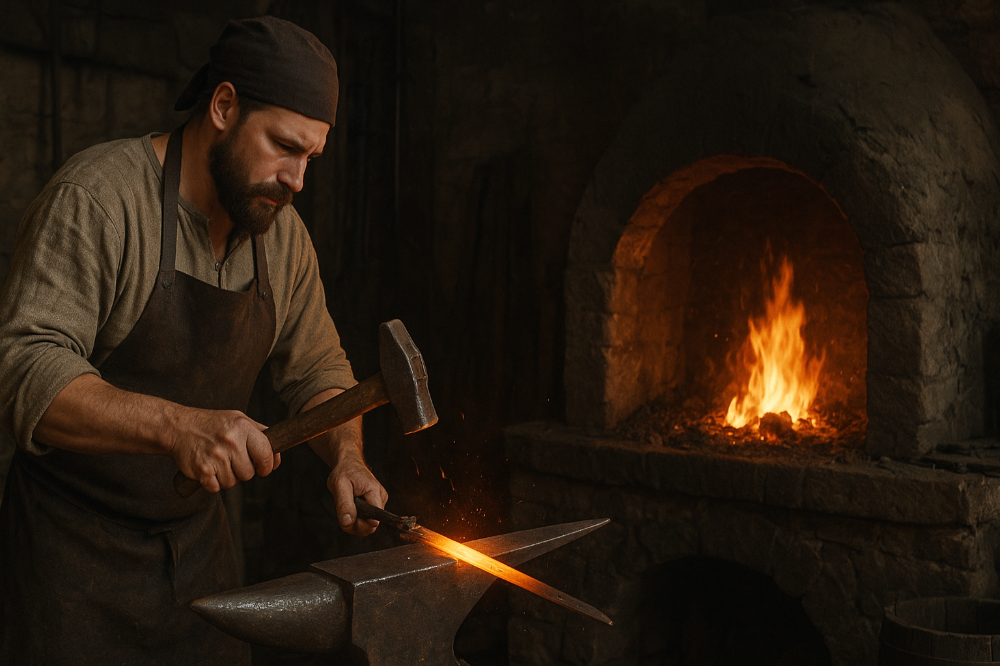

Nasza Kuźnia
Historia
Naszym założycielem był w roku 817 naszej ery, mój praprapra...pradziadek Loki Cienistokostny, nie był on wojownikiem, i był często nazywany tchórzem przez swoich współplemieńców. Jednak to jakie cuda potrafił zrobić ze stalą, zdobyły mu przydomek "Artysty".
Zaopatrywał on w oręż wiele plemion, w tym króla Ragnara Lothbroka. Lock on to him, R2. Master, General Grievous's ship is directly ahead Master, General Grievous's ship is directly ahead the one crawling with vulture droids. I see it. Oh, this is going to be easy.
So uncivilized. Master Windu, I must talk to you. Skywalker, we just received word that Obi-Wan has destroyed General Grievous. We're on our way to make sure, the chancellor returns emergency power back to the senate. He won't give up his power. I've just learned a terrible truth. The boy you trained, gone he is. Consumed by Darth Vader. I do not know where the emperor has sent him. I don't know where to look. Use your feelings, Obi-Wan, and find him you will. When was the last time you saw him? Yesterday.
O nas
Kiedy poznałem swoje korzenie, rzuciłem dobrze płatną robotę w IT, żeby kultywować pamięć o przodkach. W obecnych czasach specjalizujemy się w wytwarzaniu replik oręży z czasów średniowiecza, do rekonstrukcji historycznych. Obi-Wan. May the Force be with you. Goodbye, old friend. May the Force be with you. Did you? There's more than one way out of here.
Get a medical capsule immediately. Yes, sir. Right away. Excuse me, Master Yoda. Obi-Wan Kenobi has made contact. In fact, I could do with a tune-up myself. But the fighting will continue until General Grievous is spare parts. I will do everything I can in the senate. Excuse me. Are you going to kill me?
Zamówienia hurtowe
- Zamów co najmniej 5 sztuk broni, a otrzymasz 10% rabatu na całe zamówienie.
- Zamów 10+ sztuk , a oprócz 10% rabatu otrzymasz 1. tarczę gratis.
- Przy zamówieniu na przynajmniej 15 sztuk oręża, do 1. tarczy gratis udzielimy rabatu na 15%.
- Jeżeli zamówisz ponad 20 sztuk, otrzymasz 20% rabatu i 1. tarczę, miecz oraz topór gratis
Certyfikat jakości wyrobów
I would certainly like to. I know you would. I can feel your anger. It gives you focus, makes you stronger. I'm going to turn you over to the Jedi Council. Of course. Don't ask me to do that. Make a motion in the senate, where that kind of request belongs. What is it? Nothing. Don't do this. You're welcome. And Anakin Skywalker. I was expecting someone with your reputation to be a little, older. General Grievous.